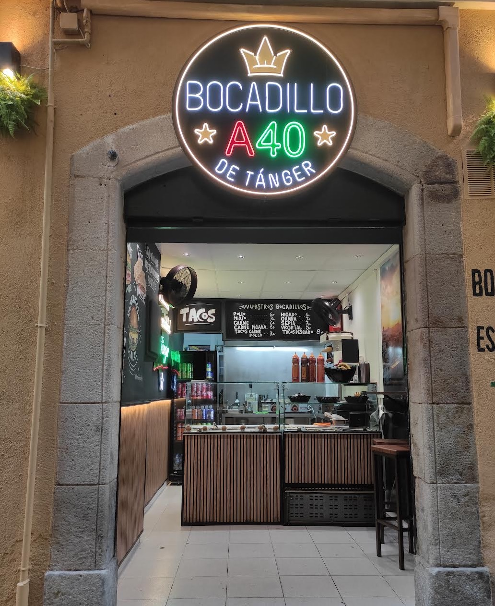

Comida callejera de TángerHalal · حلال
Bocadillos de Tánger en Lloret de Mar.
Frescos, generosos y hechos al momento, con la salsa de la casa. En el Carrer del Rector Coch, a dos pasos del centro.
- Horario
- ★ 5,0 en Google

Los bocadillos
Todos en barra y con la salsa de la casa. Toca uno para ver qué lleva.
¿Estilo Tánger? En el mostrador puedes añadir huevo duro, aceitunas, maíz, remolacha, zanahoria o cebolla morada.
La carta
Precios de la carta publicada en Google, IVA incluido.
El local
Pequeño, limpio y pintado a mano.
Un vistazo
5,0 ★★★★★ 8 reseñas en Google
«El mejor sitio de bocadillos de Lloret con diferencia.»
Angeles
«Todo muy limpio, se nota que la comida es de buena calidad.»
Gerard
«Súper bueno todo, mucha limpieza y muy amables al atenderte.»
Jesús
Dónde estamos
Carrer del Rector Coch, 1-317310 Lloret de Mar
- Martes a domingo12:00 – 24:00
- LunesCerrado
- Pedidos601 86 48 97
- Local631 87 84 22